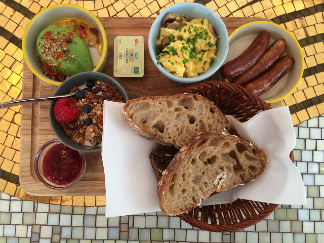

10 COLAZIONI DEL MONDO
da provare almeno una volta nella vita
consigli su alcune delle colazioni in giro per il mondo che non puoi assolutamente perdere se ti piace viaggiare ed esplorare altre culture
Puoi scegliere la tua colazione in base al clima del posto in cui ti trovi, rinfrescante o per contrastare il freddo?

Islandese
Solo una colazione abbondante riesce a contrastare le rigide temperature islandesi. Aringhe affumicate e in agrodolce, salumi alle erbe e vari formaggi per un piatto ricchissimo

Messicana
In pieno Yucatan, la colazione messicana inizia in quarta all’insegna del piccante tra chilaquiles piccanti ricoperte da pomodoro, formaggio fuso e coriandolo e succulente punte di vitello.

Hawaiiana
Cosa se non frutta esotica e coloratissima per colazione? In queste isole paradisiache al mattino si dice Haloa tra ananas, cocco, mango e papaya: un trionfo cromatico dal sapore dolcissimo
Vuoi scegliere di fare colazione con un bel panorama? Abbiamo delle soluzioni anche per te

Marocchina
Degustare una ricca colazione marocchina, magari con vista sull’oceano ad Agadir è un’esperienza straordinaria da provare. Interessante declinazione di pane e confetture. Da assaggiare anche le Baghir – crepes di farina di semola guarnite con salse dolci o formaggio.
Egiziana
Tra i suggestivi orizzonti egiziani, la mattina inizia con la Foul Madamas – la prima colazione. Oltre a focaccine dolci alla cipolla, saranno servite ottime zuppe di legumi, aglio e limone con un filo d’olio d’oliva e salsa tahini al sesamo. Un must intingervi verdure bollite e un uovo sodo.
Ce n’è per tutti i gusti, anche se preferisci una colazione salata
Thailandese
La mattina thailandese inizia con pesce speziato, carne piccante di maiale, focaccine alla frutta e ovviamente riso pilaf, una colazione abbondante e dalle interessanti sfumature a contrasto.

Inglese
Doverosa una tazza di tè, i più tradizionalisti si concederanno anche un black pudding, al sangue e cereali. Ma la consueta colazione si fa con fettine di bacon, salsicce, pane tostato e uova.

Francese
In Francia la colazione è croissant. Con gocce di cioccolato o ripieno di marmellata. Ce n’è per tutti i gusti – anche salati con prosciutto e formaggio. Immancabile un cafè au lait accanto.